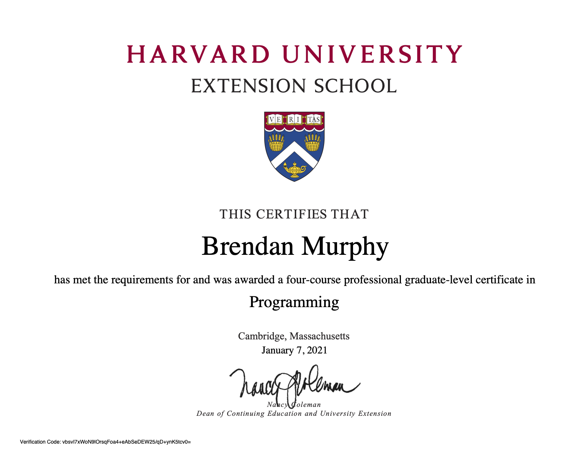

Certificates
Build a foundation in computer science and the art of programming through use of algorithms, data structures,
string manipulation, encapsulation, resource management, security, software engineering, and web development.
Develop an understanding of programming language in C, PHP, JavaScript, SQL, CSS, and HTML.
Gain knowledge of fundamental data structures for information processing, including lists, stacks, queues, trees, and graphs.
Become proficient in a focused topic area, such as C, Unix/Linux programming, web interfaces, Microsoft .NET programming, and database systems.

Define what the AWS Cloud is and the basic global infrastructure
Describe basic AWS Cloud architectural principles
Describe the AWS Cloud value proposition
Describe key services on the AWS platform and their common use cases (for example, compute and analytics)
Describe basic security and compliance aspects of the AWS platform and the shared security model
Define the billing, account management, and pricing models
Identify sources of documentation or technical assistance (for example, whitepapers or support tickets)
Describe basic/core characteristics of deploying and operating in the AWS Cloud

Master the fundamentals of website development, such as HTML5, XHTML, CSS, JavaScript, Ajax, multimedia, HTTP, and scripting languages.
Build dynamic, database-driven web applications, such as use of a LAMP framework (Linux, Apache, MySQL, and PHP) and JavaScript (+ Ajax),
among others, to develop robust online programs.
Design, code, publish, market, and monetize mobile apps and games using cross-platform tools.
Implement core concepts of information management, such as data models, database management systems, unstructured and semistructured data management,
or parallel and distributed databases

iOS iPhone Application Development